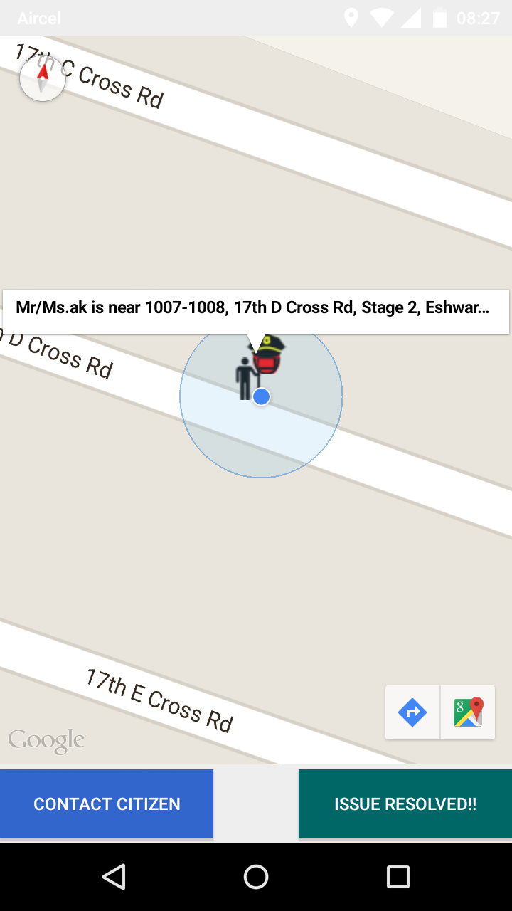
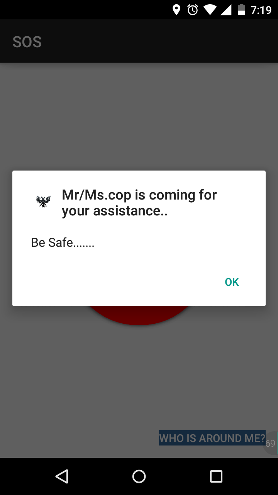
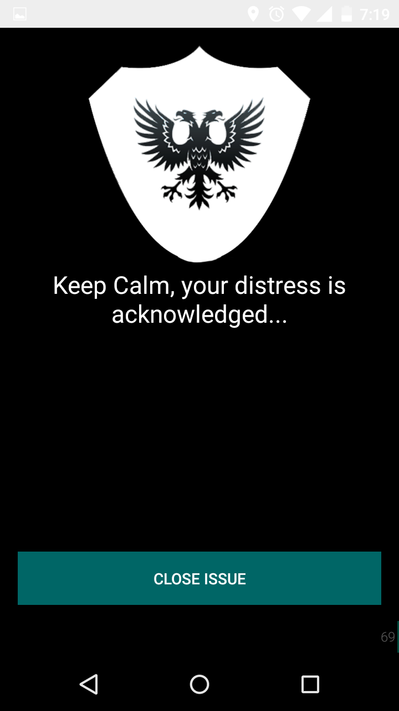

What's the matter ?
Namma Bengaluru is known for its warm and welcoming people. The city has always been the favourite of millions of people who consider it home. However, people also have found Bangalore to be unsafe. Common problems faced by public :-
- People panic in situations like street brawls, robbery, kidnapping and murder threats.
- Women find themselves helpless in situations like eve-teasing, molestation and harrassment.
- Senior citizens and children are unable to protect themselves because of their age.
- People find it unsafe to travel at night, especially women.
In such situations, people hesitate to ask help from police, due to false propoganda created by social media and movies / television shows. Police have been often stereotyped and media has often portrayed a negative image about them.
What's the solution ?
An app installed in your mobile phone which is location-aware, to help citizens connect with local police / law enforcement agencies. Key features :-
- Request the nearest police officer in your neighbourhood at the press of a button. It raises a distress signal and alerts nearby police.
- Any police in the vicinity will at once know the user's location and can choose to accept the request and solve the issue
- Rate the police out of 5. Ratings of police will be private information and civilians can rate anonymously. Police can rate civilians too.
- Police ranking and reward / badge system, to encourage positive spirit and good work.
- Algorithm that ensures that only police with positive reviews and good ratings get more cases. Potentially would help in preventing bribery / corruption. Can be used as a performance metric by the police department and other agencies to reward officers and promote them.
- Data collected from locations, crime cases solved etc can be visualized and put in a graph / charts / dashboard form. Data visualization on crime rates and statistics from a locality would be accessible by public online at http://nammapolice.xyz/stats
This way, we aim to connect the people of Bangalore with the Bangalore Police using technology, which will ensure that citizens get necessary help during emergency, and also will clear the wrong stereotypes about police. This will ensure public awareness and safety and will help Namma Police become a well respected and admired task force.
Working model includes
- Login and sign-up for police as well as civilians
- Displays all nearby police within 3 kilometre radius
- Button to send an emergency broadcast to nearby police
- Button in the police app to accept incoming help request
- Police coming to assist you is shown in the civilian's app with contact details
- View sample crime data visualization at http://nammapolice.xyz/stats
Installation:-
- Step 1: Install Git and clone all repos in your local system. You may choose to download them in tar/zip format without using git also
- Step 2: Install NodeJs and NPM
- Step 3: Install MongoDB
- Step 4: Install Redis
- Step 5: In your terminal, go to the root of the folder backend-server/namma-police
- Step 6: run npm install to install project dependencies
- Step 7: Run node app.js
Collborators:-
- Ashwin Hariharan @booleanhunter
- AK @AkdeBoss
Screenshots
-

-

-

-

-

-

-

-

- 
- 
- 